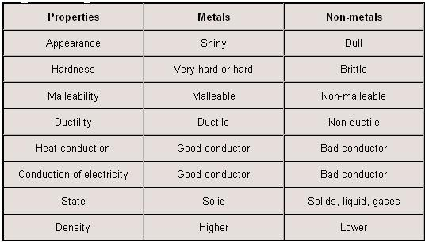

What is an element? an element is a substance that can not be broken down any further. For example, Sodium is an atom which is made of protons and neutrons and electrons. When two elements join together they are called a compound. How many elements are there? currently, the chemist has only discovered 188 different elements. How are they located and where are they located? All of these elements are located in the period table. A table in which all the elements are arranged in order of increasing atomic number. Elements that have similar properties are in the same group. And the element that has the same amount of outermost shell are arranged in rows also called period. So, let's take a look at one element from each one of the groups and talk about it in details. I will describe the elements and a few characteristic of the family. So, let's look at hydrogen first!
Hydrogen located in the first group. The first group is called the alkaline metal, elements located in the group 1 are highly reactive. They always react with water. One of the reason for group one for being highly reactive is that, the elements that are located in group one. They only have one electron in their outermost shell and the atom wants to get rid of it. Atom hold on their outermost shell is weaker than the hold on their first two shells. As the number of shells increases, the atom hold gets weaker on the outermost shell. They want to get rid of the outermost electron because they want to become stable. In other words, they want to have a full outermost shell. The easier way for atoms that does not have a full outermost shell is, to give up on the last shell electron. That forms positive Ions. Group one ion charge is plus one. For all of the elements that are in the group one. Now coming back to Hydrogen, the symbol for hydrogen is H and the atomic number of H is 1. Elements that are in the first group include.
Calcium is located in the second group and period 4. The symbol that represents Calcium is Ca. The second group is also called the alkaline earth metal. Which means that calcium would have three shells and two electrons in the outermost shell. It's also not a stable element. Any atom that does not have a full outermost shell, is called not stable. The ion charge for this group is plus 2. That's because of their hold on their outermost shell. Now coming back to Ca, the atomic number of Ca is 20. Here is the trick for drawing a Bohr-Rutherford diagram. The atomic number is 20 for this element. So, the number of electrons, after you are finished with your diagram should add up 20 as well!. Another easier way for drawing a Bohr-Rutherford diagram is; since its located in the second group it will have only 2 electrons. In its outermost shell. The period will help is know that how many shells are going to be around this atom. So, Ca have four shells and 20 electrons. Two on the first shell, eight in the second shell eight in the third shell and two in the last one. If you add up all those numbers you would get 20. That mean your Bohr-Rutherford diagram is correct. However, In the periodic table, we do have a group that is stable. They are called Noble gasses. we are gonna talk about that after halogens.
Chlorine is located on the 17 groups. Group 17 is called halogens. Halogens have 7 electrons in the outermost shell. This group wants to gain always an electron from other atoms that are not stable. So, it can become a stable atom just like the noble gasses. Back to chlorine, the symbol for chlorine is Cl. The atomic number for this element it's 17. The ion charge for this group is a negative one. As I mentioned before, the element in this group wants to gain one more electron from another atom. So, they can have a full outermost shell. Well, you are probably wondering why not just lose all that, just like the group on the left. Here is the thing the elements that are on the right are called metals. Metal is a substance that is a very good conductor, lustrous, malleable and that loses electrons very quickly because of their weak hold on their outermost shell. And nonmetals on the other hand metals are dull, poor conductor or insulators and strong hold on its outermost shell. Non-metals are located in group 18 and including these elements F, Cl, Br, I, O, S, Se, N, P, X and H. Now to answer your question yes, group one to group twelve and including Al, Ga, In, Ti, Sn, Pb, sb, Bi, Po. Metals tend to lose electrons while nonmetals on another hand they tend to gain electrons. That's the reason why Cl would want to gain electrons and the reason for negative one charge is that new electron it gains.
Neon is an element which is located in group 18 called the Noble gasses. They are called noble gasses because they NEVER react with any other element on the periodic table. Chemist says that the outermost shell tells you how reactive an element is. When an element has a full outermost shell, they are considered stable. We can clearly understand that because of how reactive the first group is. So, now if we compare this two groups we would see a big difference such as. Group one is reactive because it has only one electron in its outermost shell and group 8 on another hand is stable. It has 8 electrons in its outermost shell.Go back up